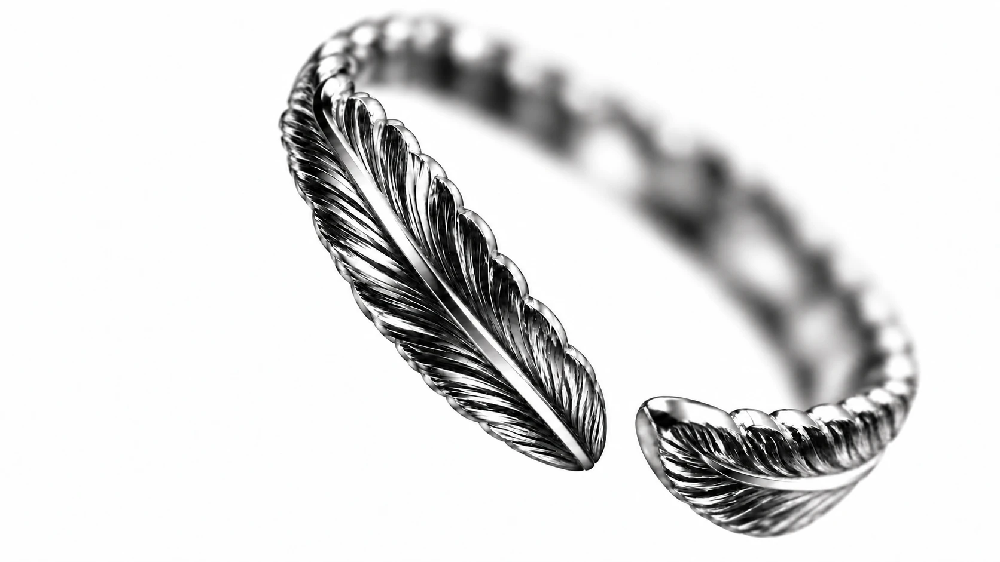
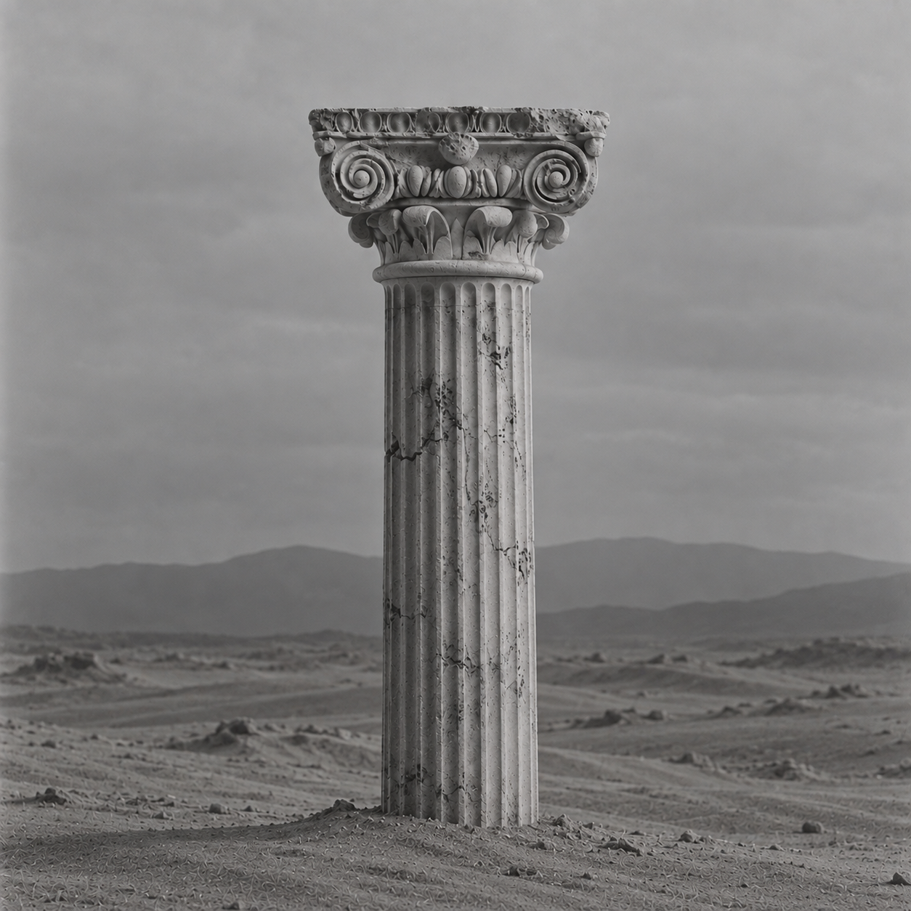
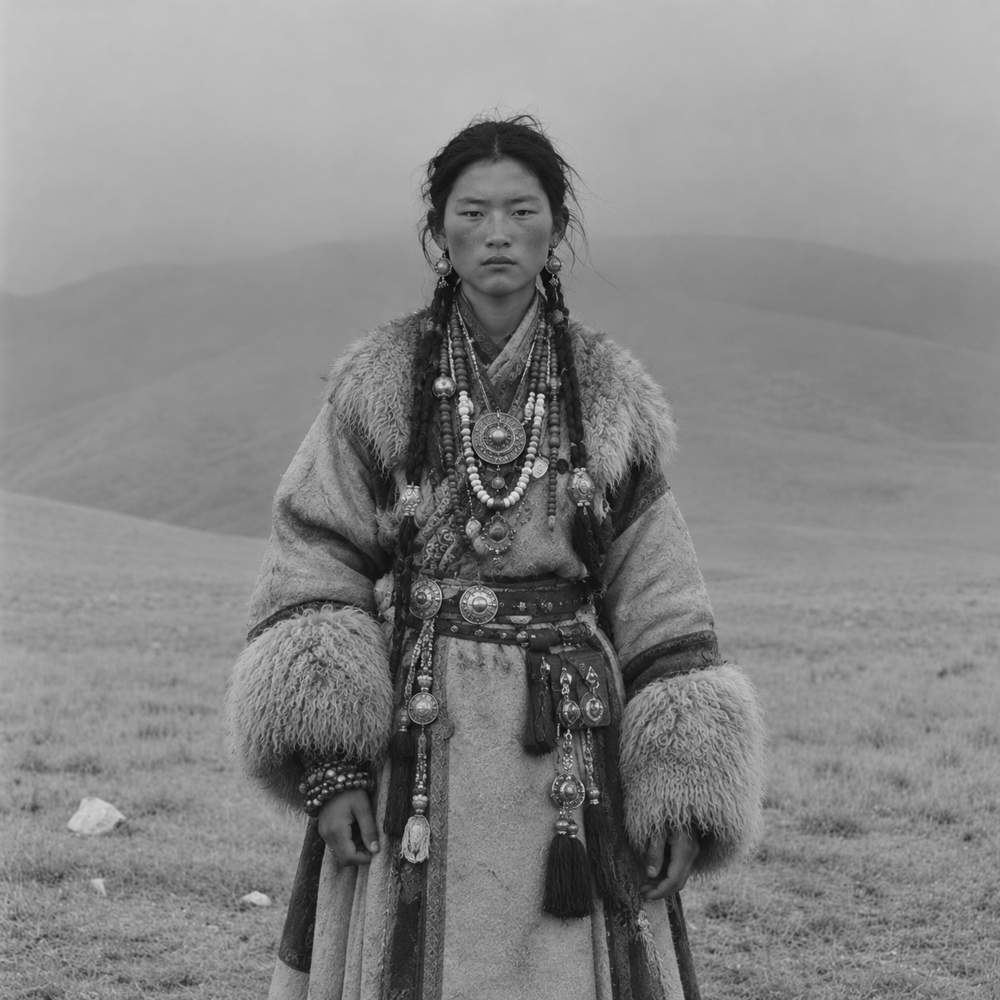
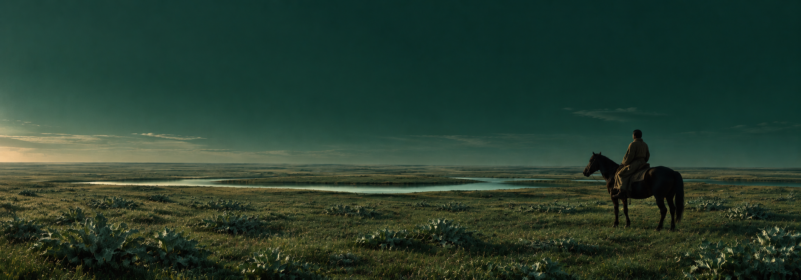
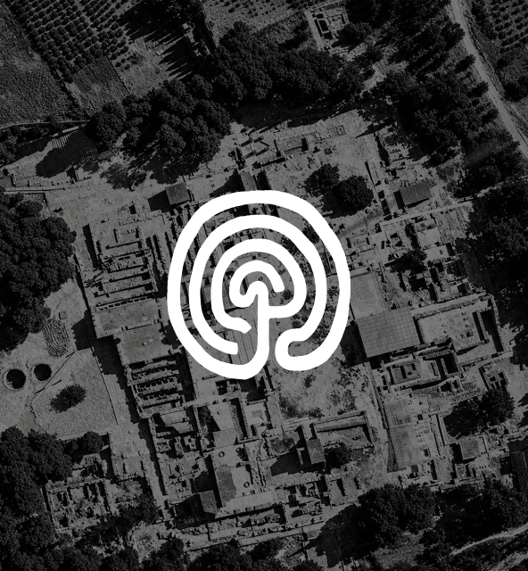
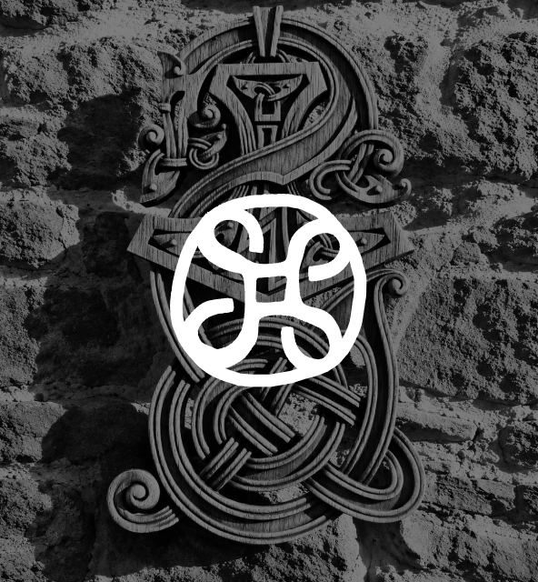

Guardian — Knot
Scroll Down

정적인 장식이 아니다
움직이는 구조, 착용되며 완성된다
Guardian Ring
Guardian — Knot

Guardian — Labyrinth

Guardian — Labyrinth
Guardian — Knot

Guardian — Eye
Acanthus takes root, Nomad moves

Rooted in resilience
살아남기 위해 뿌리를 내리고

Shaped by movement
살아남기 위해 움직였다

생명 성장 유기적 긴장감
ACANTO SELVA이동 기억 보호 여정
문화마다 다른 형태 속에서 반복되는 인간의 상징을 연구한다
EYE 심볼에 대한 자세한 디스크립션

심볼 이미지LABYRINTH 심볼에 대한 자세한 디스크립션

심볼 이미지KNOT 심볼에 대한 자세한 디스크립션
좋은 형태는 발명되지 않는다
발견되고, 선택되고, 정제된다
기술은 공유된다. 판단은 축적된다
감으로 작업하지 않는다
기록하고, 비교하고, 반복하며 기준을 만든다
우리는 새로운 형태를 창작한다고 생각하지 않는다
우리는 판단의 기준을 만든다
수많은 좋은 형태를 발견하고, 선택하고, 더 정제한다
기술은 공유된다. 판단은 축적된다
첫 번째 컬렉션이 곧 공개됩니다